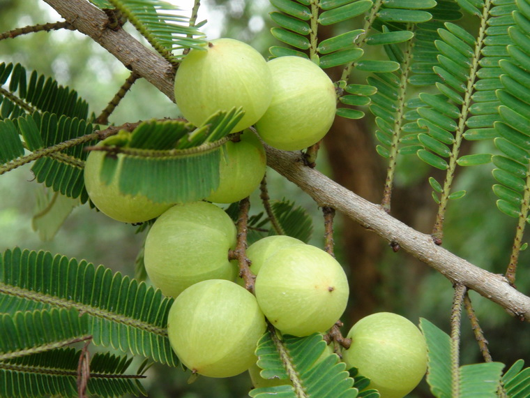

มะขามป้อม
ไม้ต้น ขนาดกลาง สูงประมาณ 8 - 12 เมตร เปลือกค่อนข้างเรียบ เกลี้ยง สีเทาอมน้ำตาลอ่อน ลอกออกเป็นแผ่นได้ กิ่งก้านแข็ง เหนียว เนื้อไม้มีสีแดงอมน้ำตาล เรือนยอดเป็นพุ่มคล้ายร่ม ปลายกิ่งมักลู่ลง
ใบ เป็นใบประกอบแบบขนนก ออกเรียงชิดกันและติดเรียงสลับตามกิ่งก้านที่เรียวยาว ลักษณะใบรูปขอบขนานหรือรูปขอบขนานแกมรูปไข่ ปลายใบแหลม ขอบใบเรียบ โคนใบเฉียงและสอบเรียว ขนาดใบเล็ก แผ่นใบสีเขี้ยวเข้ม บาง ก้านใบสั้นมาก
ดอก ออกดอกเป็นช่อแบบช่อแยกแขนง ออกช่อดอกตามง่ามใบ ช่อดอกสั้น มีดอกย่อยประมาณ 5 - 6 ดอก ดอกย่อยมีขนาดเล็ก สีขาวหรือสีเหลืองนวล กลีบดอก 5 - 6 กลีบ เป็นดอกสมมาตรตามรัศมี มีกลิ่นหอม
ผล ลักษณะผลรูปทรงกลม เกลี้ยง ขนาดเส้นผ่านศูนย์กลางประมาณ 2 เซนติเมตร ผลอ่อนสีเขียวอ่อน มีเนื้อหนา รสฝาด เปรี้ยว ขม และอมหวาน ผลแก่สีเขียวอมเหลือง มีรอยแยกแบ่งออกเป็น 6 ซีก
เมล็ด เปลือกหุ้มเมล็ดแข็งสีน้ำตาล มีสันตามยาว 6 สัน ภายในมี 6 เมล็ด
มะขามป้อมเป็นไม้ผลที่ปลูกดูแลง่าย ทนแล้งได้ดี ควรปลูกในดินที่มีส่วนผสมของขี้ไก่ แกลบดิน แกลบดำ และดินในอัตราส่วน 1:1:1:2 ปลูกโดยขุดหลุมลึกประมาณ 50×50 เซนติเมตร เทปุ๋ยขี้ไก่หรือขี้วัวรองก้นหลุมประมาณ 1 กิโลกรัม เติมน้ำลงให้ท่วมหมักไว้ประมาณ 10 วันเพื่อให้เกิดการย่อยสลาย คลายความร้อน เติมหน้าดินลงไปเล็กน้อย จึงค่อยนำต้นพันธุ์ที่เตรียมไว้ลงปลูก
การปลูกในปีแรก ควรให้น้ำอย่างสม่ำเสมอ ทุกๆ 2-3 วัน/ครั้ง เมื่อย่างเข้าปีที่ 2 หลังหมดฤดูฝน ควรงดให้น้ำเพื่อกระตุ้นให้ต้นมะขามป้อมยักษ์เกิดการสะสมอาหารที่กิ่ง ตาดอก และปล่อยให้ต้นสลัดใบทิ้ง เพื่อจำศีลในช่วงฤดูแล้ง เมื่อฝนตกจะกระตุ้นให้ต้นแตกใบ ออกดอก และติดลูกดี
ใบ รสฝาดขม ใช้ต้มน้ำอาบลดไข้, ต้มดื่มเป็นยาแก้ตัวบวมน้ำ, ใบสดโขลกให้ละเอียดใช้พอกหรือทาบริเวณที่เป็นแผลผื่นคัน มีน้ำหนองน้ำเหลือง และผิวหนังอักเสบ
เปลือกต้น รสฝาดขม เปลือกต้นแห้งบดเป็นผงละเอียดใช้โรยแก้บาดแผลเลือดออก แผลฟกช้ำ หรือนำมาต้มเอาน้ำดื่มเป็นยาแก้โรคบิดสมานแผล
ผลหรือลูก รสเปรี้ยวฝาดขม ใช้ร่วมกับผลสมอไทย ผลสมอเทศ ผลสมอพิเภก แก้ไข้ แก้ลม แก้โรคตา บำรุงธาตุ
ผลอ่อน รสเปรี้ยวหวานฝาดขม บำรุงเนื้อหนังให้สมบูรณ์ กัดเสมหะในคอ ทำให้เสียงไพเราะ
ผลแก่ รสเปรี้ยวฝาดขม ลดไข้ ขับปัสสาวะ แก้ไอ แก้เสมหะ ทำให้ชุมคอ ระบายท้อง บำรุงหัวใจ ฟอกโลหิต แก้ลม แก้ลักปิดลักเปิด
ผลแห้ง รสเปรี้ยวฝาดขม ชงน้ำร้อนดื่มแก้กระหายน้ำ แก้ไอ, ใช้หยอดตารักษาเยื่อตาอักเสบ บำรุงหัวใจ ระบายท้อง
ดอก รสหอมเย็น เข้าเครื่องยาเป็นยาเย็น และยาระบาย
เมล็ด เมล็ดสดหรือแห้งโขลกเป็นผงละเอียดชงกับน้ำร้องดื่มเป็นยาแก้ไข้ แก้โรคตาต่างๆ โรคเกี่ยวกับน้ำดี โรคเบาหวาน โรคหลอดลมอักเสบ คลื่นไส้ อาเจียน
นำมะขามป้อมสุกที่ตัดไว้ นำมาใส่ในภาชนะที่โปร่งระบายอากาศดี แล้ววางไว้ในที่อากาศถ่ายเท หรือแช่ตู้เย็นจะเก็บรักษาไว้ได้นาน